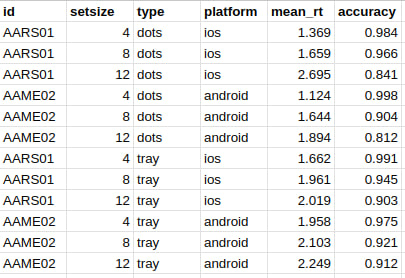
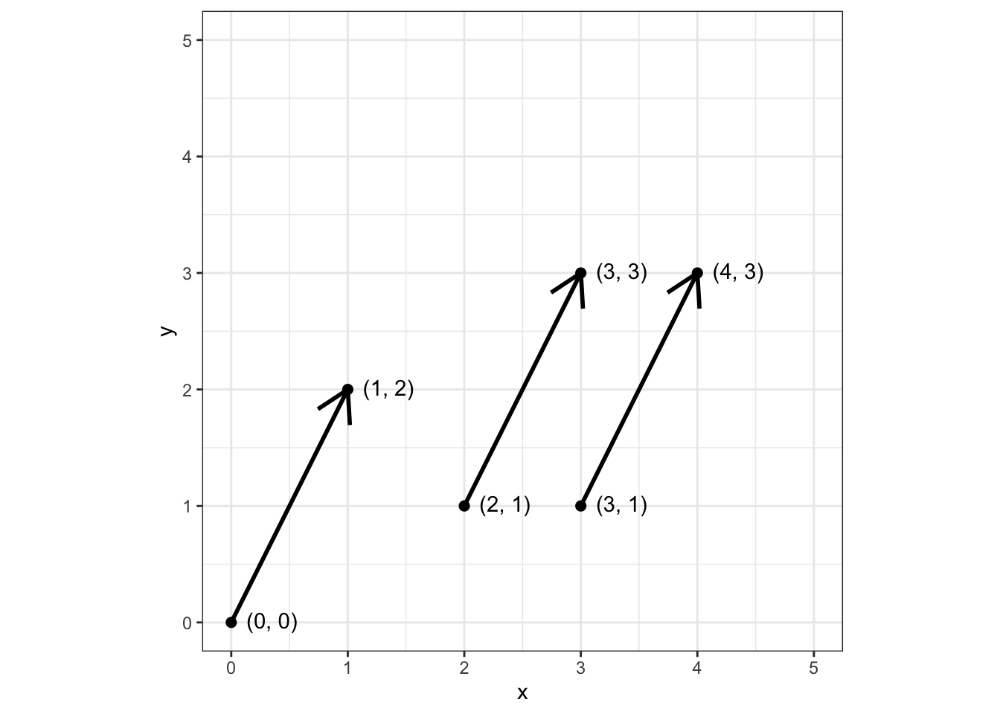
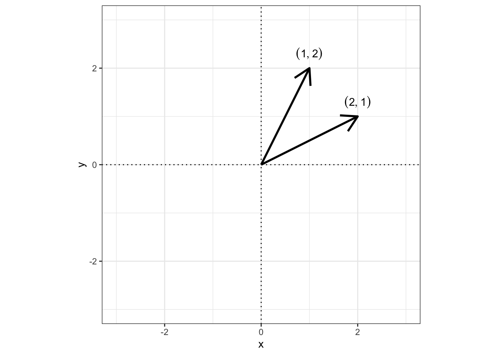

id setsize type platform mean_rt accuracy
1 AARS01 4 dots ios 1.369 0.984
2 AARS01 8 dots ios 1.659 0.966
3 AARS01 12 dots ios 2.659 0.841
4 AAME02 4 dots android 1.124 0.998
5 AAME02 8 dots android 1.644 0.904
6 AAME02 12 dots android 1.894 0.812
7 AARS01 4 tray ios 1.622 0.991
8 AARS01 8 tray ios 1.961 0.945
9 AARS01 12 tray ios 2.019 0.903
10 AAME02 4 tray android 1.958 0.975
11 AAME02 8 tray android 2.103 0.921
12 AAME02 12 tray android 2.249 0.912Мы познакомились с типами данных — числовыми, строковыми и логическими значениями. Однако если мы подумаем о данных, которые мы собираем в исследованиях, мы обнаружим, что значения не существуют изолированно друг от друга. Например, к одному респонденту «привязаны» возраст, пол, образование, наличие или отсутствие работы, ответы на опросник, какие-нибудь экспериментальных данные и так далее в зависимости от того, что именно мы исследуем. Получается, нам нужно нечто, что будет собирать разные данные в некоторую единую структуру. Ровно этим и занимаются структуры данных, которым посвящена эта глава.
Определений термину «структура данных» можно дать много. Можно сосредоточиться на технических сторонах вопроса, можно выбрать более концептуальный подход. Мы склонимся ко второму варианту и дадим достаточно для наших задач определение, хотя и весьма абстрактное.
Определение 4.1 Структура данных — это способ и форма объединения однотипных и/или логически связанных данных.
Что это для нас будет означать по сути? Давайте сразу с примера. Пожалуй, в подавляющем большинстве случаев мы будем иметь дело с данными, организованными в таблицу1 (Иллюстрация 4.1). В любой таблице, как известно, есть строки и столбцы. Столбцы, как правило, соответствуют переменным, включенным в дизайн исследования и содержат данные одного типа. Таким образом, «столбчатая» организация таблиц предоставляет способ и форму объединения данных одного типа. В то же время, строки обычно соответствуют наблюдениям (экспериментальные пробы, отдельные респонденты, сочетания экспериментальных условия и др.) и объединяют данные разных типов, относящиеся к одному и тому же наблюдению. Получается, что «строчная» организация таблиц предоставляет способ объединить логически связанные друг с другом данные. Ровно об этом и говорит данное нами определение.

Полагаю, так или иначе, каждый читатель сталкивался с таблицами и интуитивно представляет себе, как они устроены. Это довольно удобная и логичная структура данных, поэтому хотелось бы, чтобы она была воплощена в R. Воплощение таблицы в R — это датафрейм (Код 4.1).
Действительно, весьма похоже на привычную таблицу (сравните 4.1 и 4.1). И хотя датафрейм выглядит довольно интуитивно, это сложная структура данных. Чтобы понять всю её мощь, необходимо начать с более простых структур, которые станут «кирпичиками» для строительства датафрейма.
4.1 Векторы
Простейшая структура данных — это вектор (vector). Предполагаю, что многие помнят со школы этот термин, которым назывался направленный отрезок. Это правда, однако мы под вектором будем понимать другую вещь. Для нас вектор — это набор чисел. Например, мы хотим сделать вектор из трёх чисел — \(1\), \(-6\) и \(90.1\). Тогда это можно записать так:
\[ \pmatrix{1 \\ -6 \\ 90.1} \]
Можно сделать вектор и из большего количества элементов — например, из 6:
\[ \pmatrix{2 \\ 4 \\ 8 \\ 16 \\ 32 \\ 64} \]
На самом деле, и направленный отрезок, и набор чисел — это всего лишь два способа посмотреть на один и тот же объект, называемый вектором. Значения элементов вектора — это просто его координаты[^vec-linal].
[^vec-linal]. Ровно так вектор рассматривается в линейной алгебре.
— Так, подожди. Ты говоришь какие-то сомнительные вещи. Отрезок, а значит и вектор, имеет начало и конец. Тогда необходимо два набора координат, чтобы однозначно задать вектор. Ты же утверждаешь, что одного набора достаточно. Где тогда конец, а где начало? Что-то ты, автор, не договариваешь…
— Окей, давай обсудим это более детально.
4.1.1 Вектор как направленный отрезок и как набор чисел
Давайте проследим путь от направленного отрезка к набору чисел. Возьмем некоторые направленный отрезок. Пусть координаты его начала — \((2, 1)\), а координаты конца — \((3, 3)\). Так мы понимали вектор с школе (Иллюстрация 4.2).
Однако для аналитических задач ключевыми характеристиками вектора оказываются не сами координаты, а длина и направление вектора, поэтому все векторы, имеющие одинаковые направление и длину, рассматриваются как равные2.
Так, все три вектора, изображенные на рисунке 4.3, являются равными, так как у всех трёх совпадают направление и длина.

Если все три вектора для нас равны, но нам всё равно, какой из них рассматривать. Договоримся, что все векторы у нас начинаются из точки \((0, 0)\) (начала координат), так как это избавит нас от необходимости учитывать координаты начала вектора — они всегда будут \((0, 0)\). Тогда исходный вектор с началом в \((2, 1)\) и концом в \((3, 3)\) примет такой вид (Иллюстрация 4.4):

Таким образом, теперь любой вектор однозначно задаётся координатами своего конца. Получается, мы можем просто записать \((1, 2)\), или же в форме, принятой в математике для векторов — \(\pmatrix{1 \\ 2}\).
Вот и вся магия.
То есть теперь для нас вектор равносилен набору координат его конца. Конец вектора — это точка плоскости, которая однозначно описывается двумя координатами. Приведём ещё несколько примеров. Пусть у нас есть три вектора:
\[ \pmatrix{1 \\ 0.5}, \quad \pmatrix{2 \\ 3}, \quad \pmatrix{-2.5 \\ -2.5} \]
Изобразить их можно следующим образом (Иллюстрация 4.5):
Здесь важно отметить, что значения в векторе идут в том же порядке, что и координаты конца отрезка — сначала \(x\), потом \(y\). Векторы \(\pmatrix{1 \\ 2}\) и \(\pmatrix{2 \\ 1}\) — это разные векторы, так как у них различается направление, хотя и совпадает длина (Иллюстрация 4.6).

Пока мы живём на плоскости, то всё легко визуализировать — есть две координаты, значит в векторах будет по два элемента. Однако в самом начале мы сказали, что в векторе может быть и больше элементов. Принципиально здесь ничего не меняется, только теперь это будут координаты в трёх-, четырёх-, шестимерном пространстве. Отрисовать и представить себе это весьма трудно, однако математика такого не запрещает.
4.1.2 Вектор как структура данных
Вернёмся к вектору как структуре данных, ведь это наша главная цель. Опираясь на рассмотренное выше геометрическое представление, можно дать следующее определение:
Определение 4.2 Вектор — это упорядоченный набор элементов одного типа.
Почему такое определение соответствует геометрическому представлению? Давайте по пунктам:
- в векторе есть определённые элементы
- в примерах выше это были числа
- их несколько, поэтому это набор
- в примерах выше было минимум два
- все элементы являются объектами одного и того же типа данных
- в примерах выше в векторе могли быть только числа
- элементы упорядочены
- в примерах выше мы видели, что \(\pmatrix{1 \\ 2} \neq \pmatrix{2 \\ 1}\)
Вот и получается такая структура. У вектора как структуры данных нет ограничения на тип данных — вектор может быть числовым, текстовым или логическим. Важно, чтобы внутри него все элементы были либо текстовыми, либо числовыми, либо логическими.
Упорядоченный ≠ Отсортированный
Слово «упорядоченный» может вводить в некоторое заблуждение, так как по смыслу тесно связано со словом «отсортированный», однако есть существенное различие.
- Если набор элементов упорядочен, значит мы знаем, какой идёт первым, какой — вторым, какой — третьим, и так далее.
- Вовсе не обязательно, что первый будет наименьшим, а последний — наибольшим.
- Если набор элементов отсортирован, значит он упорядочен по возрастанию или по убыванию.
- В случае сортировки по возрастанию первый элемент наименьший, второй — больше первого, но меньше третьего, третий — больше второго, но меньше четвертого, и так далее. Последний элемент будет наибольшем.
- В случае сортировки по убыванию всё наоборот.
4.1.3 Создание векторов
Что-то мы заболтались — давайте уже попробует что-нибудь покодить. Сперва научимся создавать векторы. Вектор можно создать из произвольных элементов с помощью функции c() (от concatenate или combine):
v_num <- c(1, 6, -34, 7.7, 0, 0.36) # числовой вектор
v_char <- c("Москва", "Санкт-Петербург", "Нижний Новгород", "Пермь") # текстовый вектор
v_log <- c(TRUE, FALSE, TRUE, TRUE, FALSE) # логический вектор
Великий рофл случая
Так случилось, что латинская c и русская с выглядят идентично и находятся на одной и той же клавише клавиатуры. Из-за этого часто возникает следующая ошибка:
v_num <- с(1, 6, -34, 7.7, 0, 0.36)Error in с(1, 6, -34, 7.7, 0, 0.36): could not find function "с"Код выглядит совершенно корректно, однако R сообщает, что не нашёл функцию с(). Это значит, что вы забыли переключить раскладку клавиатуры, когда писали соответствующую команду. Всё, что нужно сделать, сменить раскладку и исправить название функции.
Итак, мы создали три вектора разных типов — числовой v_num, тестовый v_char и логический v_log. Можно убедиться, что они соответствуют своим типам с помощью уже знакомой нам функции class():
class(v_num)[1] "numeric"class(v_char)[1] "character"class(v_log)[1] "logical"Кроме того, можно вывести содержимое вектора. Для этого нужно просто написать название переменной, в которую был сохранён вектор — значения, сложенные в него, будут напечатаны в консоли:
v_num[1] 1.00 6.00 -34.00 7.70 0.00 0.36v_char[1] "Москва" "Санкт-Петербург" "Нижний Новгород" "Пермь" v_log[1] TRUE FALSE TRUE TRUE FALSElength(v_num)[1] 6length(v_char)[1] 4length(v_log)[1] 5
В R нет скаляров
— Что-о-о-о? Но ведь числа? У нас были числа…
— Были. Но скаляров всё равно нет.
Во многих языках программирования существует разделения на скаляры и векторы. Скаляры — это величины
4.1.4 Генерация числовых последовательностей
4.1.5 Индексация векторов
Из вектора можно вытащить его элемент:
v_char[2] # по номеру[1] "Санкт-Петербург"v_num[v_num > 5] # по условию[1] 6.0 7.74.1.6 Векторизация
Для того, чтобы выполнить операцию на всем векторе поэлементно, не нужно перебирать его элементы.
vec <- 1:4
vec - 1[1] 0 1 2 3vec^2[1] 1 4 9 16sqrt(vec)[1] 1.000000 1.414214 1.732051 2.0000004.1.7 Recycling
Если мы будем, например, складывать два вектора разной длины, то более короткий зациклится.
vec1 <- 1:10
vec2 <- 1:2
vec1 [1] 1 2 3 4 5 6 7 8 9 10vec2[1] 1 2vec1 + vec2 [1] 2 4 4 6 6 8 8 10 10 124.2 factor
Бывают такие переменные, которые группируют наши данные. Например,
- город проживания (
Москва,Санкт-Петербург,Казань,Екатеринбург) - уровень образования (
бакалавриат,специалитет,магистратура,аспирантура) - экспериментальная группа (
group1,group2,control) - и др.
Обычно они текстовые. Для них был придуман тип данных factor, чтобы их было дешевле хранить. Однако большинство современных пакетов сами могут решить, когда надо текст перевести в фактор.
Ordered factor (упорядоченный фактор) — тип данных, который позволяет задать порядок групп. Например,
- уровень образования:
bachelor<master<phd<postdoc - сложность экспериментальной задачи:
easy<medium<hard - и др.
Вот упорядоченный фактор нам время от времени может понадобиться — например, для создания визуализаций или в некоторых статистических моделях.
typeof(factor("x"))[1] "integer"is.integer(factor("x"))[1] FALSEis.numeric(factor("x"))[1] FALSE4.3 Матрицы
Если мы желаем приблизиться к датафрейму, то одного ряда элементов нам недостаточно — надо выходить во второе измерение! Поэтому уложим вектор в матрицу:

Или вот еще разные варианты:
v <- 1:12
m1 <- matrix(v, nrow = 3)
m1 [,1] [,2] [,3] [,4]
[1,] 1 4 7 10
[2,] 2 5 8 11
[3,] 3 6 9 12m2 <- matrix(v, nrow = 4)
m2 [,1] [,2] [,3]
[1,] 1 5 9
[2,] 2 6 10
[3,] 3 7 11
[4,] 4 8 12m3 <- matrix(v, nrow = 3, byrow = TRUE)
m3 [,1] [,2] [,3] [,4]
[1,] 1 2 3 4
[2,] 5 6 7 8
[3,] 9 10 11 12m4 <- matrix(v, nrow = 4, byrow = TRUE)
m4 [,1] [,2] [,3]
[1,] 1 2 3
[2,] 4 5 6
[3,] 7 8 9
[4,] 10 11 124.3.1 Индексация матриц
Из матрицы можно вытащить её элементы:
m1 [,1] [,2] [,3] [,4]
[1,] 1 4 7 10
[2,] 2 5 8 11
[3,] 3 6 9 12m1[2, 3] # отдельный элемент[1] 8m1[1, ] # целую строку[1] 1 4 7 10m1[, 4] # целый столбец[1] 10 11 12m1[1:2, 2:4] # часть матрицы [,1] [,2] [,3]
[1,] 4 7 10
[2,] 5 8 114.4 Массивы
- Вектор — одномерный массив.
- Матрица — двумерный массив.
- Массивы — структуры, которые объединяют данные только одного типа.
c(2, TRUE)[1] 2 1c(2, TRUE, "word")[1] "2" "TRUE" "word"При объединении разных типов данных в одном массиве происходит приведение типов (coercion) по следующей иерархии:
logical → integer → numeric → complex → character
Это нам осложняет жизнь, так как мы бы хотели объединять данные разных типов в одну структуру.
4.5 Списки
Списки позволяют объединять массивы различных типов данных, чем делают нашу жизнь значительно приятнее.

Например, так:
l <- list(v1 = v_num,
v2 = v_char,
m1 = m1,
ls = list(v = v,
m = m3))
l$v1
[1] 1.00 6.00 -34.00 7.70 0.00 0.36
$v2
[1] "Москва" "Санкт-Петербург" "Нижний Новгород" "Пермь"
$m1
[,1] [,2] [,3] [,4]
[1,] 1 4 7 10
[2,] 2 5 8 11
[3,] 3 6 9 12
$ls
$ls$v
[1] 1 2 3 4 5 6 7 8 9 10 11 12
$ls$m
[,1] [,2] [,3] [,4]
[1,] 1 2 3 4
[2,] 5 6 7 8
[3,] 9 10 11 124.5.1 Индексация списков
l[1] # по номеру элемента, возвращается список$v1
[1] 1.00 6.00 -34.00 7.70 0.00 0.36l[[1]] # по номеру элемента, возвращается массив[1] 1.00 6.00 -34.00 7.70 0.00 0.36l$ls # по названию элемента$v
[1] 1 2 3 4 5 6 7 8 9 10 11 12
$m
[,1] [,2] [,3] [,4]
[1,] 1 2 3 4
[2,] 5 6 7 8
[3,] 9 10 11 12l$ls$m # можно идти многоуровнево [,1] [,2] [,3] [,4]
[1,] 1 2 3 4
[2,] 5 6 7 8
[3,] 9 10 11 124.6 Датафреймы
- возьмем список
- потребуем, чтобы его элементами были векторы
- потребуем, чтобы эти векторы были одинаковой длины
- расположим их «вертикально»

4.6.1 Индексация датафрейма
Для примера возьмем датафрейм про бриллианты:
diam# A tibble: 6 × 10
carat cut color clarity depth table price x y z
<dbl> <ord> <ord> <ord> <dbl> <dbl> <int> <dbl> <dbl> <dbl>
1 0.23 Ideal E SI2 61.5 55 326 3.95 3.98 2.43
2 0.21 Premium E SI1 59.8 61 326 3.89 3.84 2.31
3 0.23 Good E VS1 56.9 65 327 4.05 4.07 2.31
4 0.29 Premium I VS2 62.4 58 334 4.2 4.23 2.63
5 0.31 Good J SI2 63.3 58 335 4.34 4.35 2.75
6 0.24 Very Good J VVS2 62.8 57 336 3.94 3.96 2.48Датафрейм наследует свойства списка и матрицы, что делает его невероятно гибким в обращении и крайне удобным в работе:
diam$carat # вытащить столбец[1] 0.23 0.21 0.23 0.29 0.31 0.24diam[diam$price > 330, ] # отобрать строки по условию# A tibble: 3 × 10
carat cut color clarity depth table price x y z
<dbl> <ord> <ord> <ord> <dbl> <dbl> <int> <dbl> <dbl> <dbl>
1 0.29 Premium I VS2 62.4 58 334 4.2 4.23 2.63
2 0.31 Good J SI2 63.3 58 335 4.34 4.35 2.75
3 0.24 Very Good J VVS2 62.8 57 336 3.94 3.96 2.48diam[, c(2:3, 7)] # вытащить столбцы по номерам# A tibble: 6 × 3
cut color price
<ord> <ord> <int>
1 Ideal E 326
2 Premium E 326
3 Good E 327
4 Premium I 334
5 Good J 335
6 Very Good J 336diam[1:4, c("carat", "price")] # вытащить отдельные строки по номерам и столбцы по названиям# A tibble: 4 × 2
carat price
<dbl> <int>
1 0.23 326
2 0.21 326
3 0.23 327
4 0.29 334О других возможностях организации данных мы скажем в следующей главе, когда будет рассматривать форматы данных.↩︎
Такие векторы называются свободными. Именно такие векторы рассматриваются в линейной алгебре.↩︎